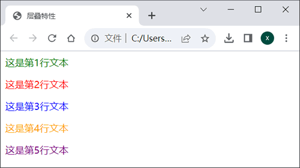

首页 > 编程笔记
CSS层叠特性详解
CSS 的全名叫作“层叠样式表”，读者有没有考虑过这里的“层叠”是什么意思？这个词如此重要，以至于要出现在它的名称里。
CSS 的层叠特性确实很重要，但是要注意，千万不要将它和前面介绍的“继承”混淆，二者有着本质的区别。实际上，层叠可以被简单地理解为“冲突”的解决方案。层叠指的是样式的优先级。CSS 样式在针对同一元素配置同一属性时，会依据层叠规则（权重）来处理冲突，即会选择应用权重高的 CSS 选择器所指定的属性，这一操作一般也被描述为权重高的覆盖权重低的，因此称其为“层叠”。
例如下面这段代码：
下面来确定每一行文本的颜色。
综上所述，上面这段代码的显示效果如下图所示。
优先级规则可以表述为
在简单的页面中，这样的特殊需求实现起来不会很难，但如果网站的结构很复杂，再进行这样的设置就完全有可能使代码变得非常混乱，出现无法找到某一个元素的样式来自哪条规则的情况。因此，必须要充分理解 CSS 中“层叠”的原理。
计算冲突样式的优先级是一个比较复杂的过程，并不是上面这个简单的优先级规则所可以完全描述的。读者可以把握一个大的原则：越特殊的样式，其优先级越高。
例如，行内样式仅对指定的一个元素产生影响，因此它非常特殊；使用了类别样式的某种元素，一定是所有该种元素中的一部分，因此它一定比标记样式特殊；ID 样式是针对某一个元素的，因此它一定比应用于多个元素的类别样式特殊。总之，越特殊的元素，其优先级越高。
最后再次提醒读者，千万不要混淆了层叠与继承，二者完全不同。
CSS 的层叠特性确实很重要，但是要注意，千万不要将它和前面介绍的“继承”混淆，二者有着本质的区别。实际上，层叠可以被简单地理解为“冲突”的解决方案。层叠指的是样式的优先级。CSS 样式在针对同一元素配置同一属性时，会依据层叠规则（权重）来处理冲突，即会选择应用权重高的 CSS 选择器所指定的属性，这一操作一般也被描述为权重高的覆盖权重低的，因此称其为“层叠”。
例如下面这段代码：
<html>
<head>
<title>层叠特性</title>
<style type="text/css">
p{
color:green;
}
.red{
color:red;
}
.purple{
color:purple;
}
#line3{
color:blue;
}
</style>
</head>
<body>
<p>这是第1行文本</p>
<p class="red">这是第2行文本</p>
<p id="line3" class="red">这是第3行文本</p>
<p style="color:orange;" id="line3">这是第4行文本</p>
<p class="purple red">这是第5行文本</p>
</body>
</html>
代码中一共有 5 组 <p> 标记定义的文本，并在 <head> 标记中声明了 4 个选择器为不同颜色。下面来确定每一行文本的颜色。
- 第 1 行文本没有使用类别样式和 ID 样式，因此这行文本显示为标记选择器 p 中定义的绿色。
- 第 2 行文本使用了类别样式，因此这时已经产生了“冲突”。那么，是按照标记选择器 p 中定义的绿色显示，还是按照类别选择器中定义的红色显示呢？答案是类别选择器的优先级高于标记选择器，因此显示为类别选择器中定义的红色。
- 第 3 行文本同时使用了类别样式和 ID 样式，这又产生了“冲突”。那么，是按照类别选择器中定义的红色显示，还是按照 ID 选择器中定义的蓝色显示呢？答案是 ID 选择器的优先级高于类别选择器，因此显示为 ID 选择器中定义的蓝色。
- 第 4 行文本同时使用了行内样式和 ID 样式，那么这时又以哪一个为准呢？答案是行内样式的优先级高于 ID 样式的优先级，因此显示为行内样式定义的橙色。
- 第 5 行文本中使用了两个类别样式，那么这时应以哪个为准呢？答案是两个类别选择器的优先级相同，此时以前者为准。.purple 定义在 .red 的前面，因此显示为 .purple 定义的紫色。
综上所述，上面这段代码的显示效果如下图所示。

图 1 层叠特性
图 1 层叠特性
优先级规则可以表述为
行内样式 > ID样式 > 类别样式 > 标记样式
在复杂的页面中，某一个元素有可能会从很多地方获得样式，例如一个网站的某一级标题整体被设置为绿色，而对某个特殊栏目则使用蓝色，这样在该栏目中就需要覆盖通用的样式设置。在简单的页面中，这样的特殊需求实现起来不会很难，但如果网站的结构很复杂，再进行这样的设置就完全有可能使代码变得非常混乱，出现无法找到某一个元素的样式来自哪条规则的情况。因此，必须要充分理解 CSS 中“层叠”的原理。
计算冲突样式的优先级是一个比较复杂的过程，并不是上面这个简单的优先级规则所可以完全描述的。读者可以把握一个大的原则：越特殊的样式，其优先级越高。
例如，行内样式仅对指定的一个元素产生影响，因此它非常特殊；使用了类别样式的某种元素，一定是所有该种元素中的一部分，因此它一定比标记样式特殊；ID 样式是针对某一个元素的，因此它一定比应用于多个元素的类别样式特殊。总之，越特殊的元素，其优先级越高。
最后再次提醒读者，千万不要混淆了层叠与继承，二者完全不同。
关注公众号「站长严长生」，在手机上阅读所有教程，随时随地都能学习。内含一款搜索神器，免费下载全网书籍和视频。

微信扫码关注公众号